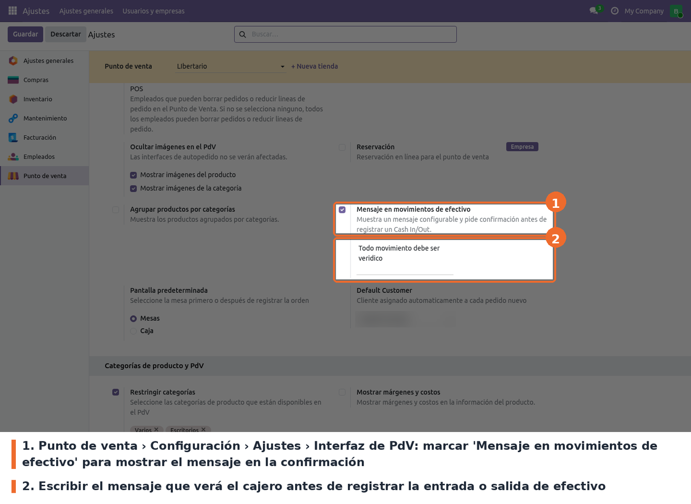
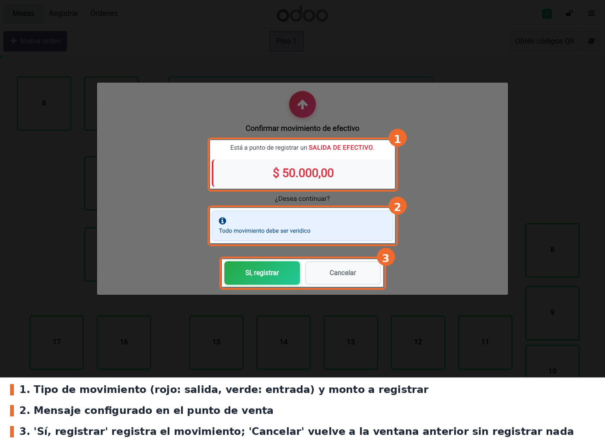

Pide una confirmación explícita antes de registrar una entrada o salida de efectivo en el Punto de Venta. Al pulsar Confirmar en la ventana de Entrada/salida de efectivo, aparece un diálogo que muestra el tipo de movimiento (entrada o salida), el monto y, si el punto de venta lo tiene configurado, un mensaje propio del negocio (por ejemplo, un recordatorio del procedimiento de caja). El movimiento solo se registra si el cajero responde Sí, registrar.
Existe para evitar movimientos de caja registrados por error: un monto mal digitado o una salida marcada como entrada se detecta antes de que afecte el cuadre de la sesión.
Trabaja junto con pos_closing_validation, del que depende: ese módulo lleva la cuenta de
movimientos permitidos por sesión, y este muestra en el mismo diálogo el aviso de último
movimiento permitido cuando corresponde.
pos_closing_validation (módulo propio de este repositorio). Trae a su vez point_of_sale. No
hay dependencias externas ni librerías de Python adicionales.Instalar el módulo desde Aplicaciones. No crea modelos nuevos ni permisos: agrega dos campos a la configuración del punto de venta y los archivos del POS. Después de instalar o actualizar, hay que volver a entrar al POS desde el backend para que cargue los archivos nuevos.
En Odoo 17 el módulo se llamaba cash_in_out_message. Al instalarse, un pre_init_hook
(hooks.py) renombra el módulo viejo en la base: pasa sus xmlids (ir_model_data), su registro
en ir_module_module y las dependencias registradas a pos_cash_in_out_message. Las consultas son
UPDATE que no hacen nada si el nombre viejo no existe, así que el hook se puede ejecutar más de
una vez sin efecto.
Los campos de configuración conservan el mismo nombre técnico que en 17
(cash_in_out_message_enabled y cash_in_out_message en pos.config), por lo que la
configuración existente se mantiene sin script de datos.
Ir a Punto de venta › Configuración › Ajustes, elegir el punto de venta en la parte superior y buscar el bloque Interfaz de PdV. Allí está la opción Mensaje en movimientos de efectivo.

Punto de venta › Configuración › Ajustes › Interfaz de PdV: opción Mensaje en movimientos de efectivo
cash_in_out_message_enabled de pos.config). Opcional; desmarcada por
defecto. Al marcarla aparece el cuadro de texto del mensaje.cash_in_out_message de pos.config). Opcional; vacío por defecto.
Texto libre, sin formato, que se muestra dentro del diálogo de confirmación.A tener en cuenta:
pos_closing_validation (Máximo de movimientos de efectivo), no en este módulo.En el POS, abrir el menú (☰) y elegir Entrada/salida de efectivo. Elegir el tipo de movimiento, escribir el monto y el motivo, y pulsar Confirmar. Antes de registrar nada aparece el diálogo de confirmación, que muestra:
Sí, registrar registra el movimiento por el flujo normal de Odoo. Cancelar cierra el diálogo y vuelve a la ventana anterior con el monto ya escrito, para corregirlo.

Diálogo de confirmación de una salida de efectivo con el mensaje configurado
pos_closing_validation bloquea el movimiento y el diálogo
no llega a abrirse.pos_closing_validation se omite para no preguntar dos veces.pos_closing_validation..config-message del CSS no tiene display: flex, a diferencia del aviso de último
movimiento. Es solo estético.static/description/icon.png: en Aplicaciones se ve el ícono genérico de Odoo.models/pos_config.py: los dos campos de pos.config y sus campos relacionados en
res.config.settings. En Ajustes llevan el prefijo pos_ porque ese modelo es compartido por
todos los módulos, y un nombre sin prefijo podría chocar con otro.views/pos_config_views.xml: el bloque en Ajustes › Interfaz de PdV.static/src/js/cash_move_popup_patch.js: parche de CashMovePopup.confirm() que abre el
diálogo antes de delegar en el flujo estándar.static/src/js/cash_move_confirm_popup.js, .xml y .css: el diálogo, un componente OWL sobre
Dialog que se abre con makeAwaitable y responde por getPayload. Los estilos están todos
bajo .cash-move-confirm-popup.hooks.py: el renombre desde Odoo 17 (ver Instalación).pos.config no define _load_pos_data_fields y
el POS lee todos sus campos.pos_closing_validation. El parche usa tres métodos que ese módulo agrega
al mismo CashMovePopup: isCashMoveBlocked(), isLastCashMove() y
setLastMoveWarningSkipped(). Si se renombra alguno, hay que actualizar los dos módulos en el
mismo cambio. Si el parche no encuentra esos métodos, el POS falla al pulsar Confirmar.tests/test_cash_in_out_message.py cubre la configuración: valor por defecto, que
Ajustes escriba y lea en pos.config, el prefijo pos_ y que desactivar no borre el texto. El
diálogo del POS no tiene test automático: se valida a mano en el navegador.assets apuntaba a cash_in_out_message/static/....
Tras renombrar la carpeta, esas rutas dejaron de existir y el POS no cargaba nada del módulo,
sin ningún error al arrancar. Al renombrar un módulo, las rutas de assets deben empezar con el
nombre nuevo de la carpeta.